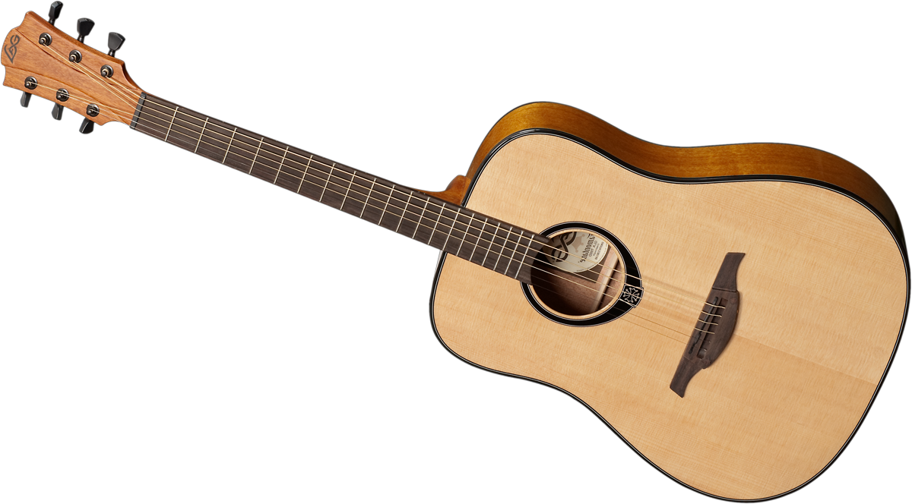

|  | |
|
| Acoustic Guitar | Cricket-Bat | Shoes |
Acoustic Guitar
Brand Juârez
Colour Black
Body Material Wood
Back Material Type Plastic, Wood, Ebony, Basswood
Fretboard Material Type Ebony
About this item
Black Glossy Finish, Number of Frets: 18, Acoustic Guitar with strap, Bag, Strings and 2 Picks
Great looks with an innovative design to produce good quality sound
Finger board: Linden Wood, Fretboard - Ebony Wood, Size: 38 inches, Cutaway
Included components: Acoustic Guitar with strap, Bag, Strings and 2 Picks
Linden Binding and Full Wood Construction with Geared Tuning, Wood Frame and Steel Strings
Size Size 1
Sport Cricket
Brand SPARTAN
Material Kashmir-Willow
Handle Material Wood
About this item
In Box contents: 1 Cricket Bat with Cover | Material: Kashmir Willow | Grade: Grade 5 | No. of Grains :0-5 | Needs Knocking: Yes | With Cover: Yes | Has Toe Guard: No
Suitable For: Leather Ball | Weight: 1200 gm | Sweet Spot: Middle | Spine Profile: Medium
Playing Style: All-Round
Has thick edges and curved blade that helps play powerful strokes with better control and stability
Handle is made of imported Sarawak Cane Handle that delivers great pickup and sturdiness
Sole: Polyvinyl Chloride
Closure: Lace-Up
Shoe Width: Medium
Sole: PVC || Closure : Lace-Ups ||Color : Red || Toe Style: Closed Toe.
Elevate your style with this classy pair of Casual Shoes from the house of WORLD WEAR FOOTWEAR.
Top Rated, Best Rates Training Shoes,Walking Shoes,Gym Shoes ,Sports Shoes, Running Shoes For Men,Cricket Shoes,Casual Shoes,Trekking Shoes,Comfortable For Men'S
The Footwear That Suits Your Personality. Our Footwear Are Made With Good Material And The It Offers You Trendy Design With Long Lasting Performance.
GREAT COMFORT & PREMIUM MATERIAL : The WORLD WEAR FOOTWEAR Shoe matches a first-class feeling of comfort with iconic WORLD WEAR FOOTWEAR style and soul. It features a unique construction for a seamless fit, while its outsole adds a visible pu-Sole unit for enhanced cushioning.
Go to top